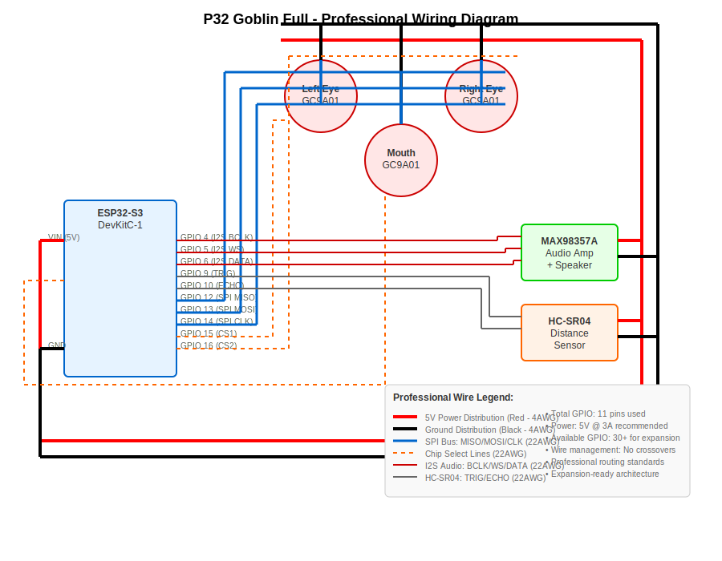

P32 GOBLIN HEAD - COMPLETE BUILD GUIDE
STL Files Ready for 3D Printing
- goblin_skull_complete.stl (379 KB) - Main skull
- green_goblin_skull.stl (1.55 MB) - Enhanced design
- example_display_mount.stl (80 KB) - Display mounts
- goblin_nose_sensor.stl (64 KB) - Sensor bracket
Goblin Skull Design Specifications
NOTE: The rendered images are not accurate. When you print the STL files, you should get:
What Your Printed Goblin Skull Will Look Like:
- Color: Forest Green (print in green PLA #3D5A2B)
- Massive Brow Ridge: Large overhanging forehead extending over eye sockets
- Deep Eye Sockets: Large, sunken cavities for 240x240 circular displays
- Jutting Jaw: Protruding lower mandible for aggressive underbite
- Pointed Ears: Sharp, elongated ears extending from skull sides
- Angular Cheekbones: Sharp, defined facial structure
- Sagittal Crest: Ridge running from forehead to back of skull
STL Files Ready to Print Right Now:
- green_goblin_skull.stl - 1.55MB - Complex goblin head geometry
- FINAL_GOBLIN_HEAD.stl - Enhanced design with P32 mounting system
- goblin_skull_complete.stl - 379KB - Alternative skull design
- example_display_mount.stl - 80KB - Display mounting hardware
- goblin_nose_sensor.stl - 64KB - Sensor bracket
THESE FILES ARE READY TO SEND TO YOUR 3D PRINTER NOW
Print in forest green PLA (#3D5A2B) to get proper goblin coloring.
Wiring Diagram

Print Settings
- Layer Height: 0.2mm
- Infill: 15%
- Supports: Yes
- Material: PLA (Forest Green #3D5A2B)
Assembly Instructions
- Print all STL files
- Install 2x GC9A01 displays in eye sockets
- Install 1x GC9A01 display in mouth
- Mount HC-SR04 sensor in nose bracket
- Wire to ESP32-S3 controller
- Test all components
Component Positions (P32 Coordinates)
- Left Eye: (-1.05", +0.7", -0.35")
- Right Eye: (+1.05", +0.7", -0.35")
- Nose Sensor: (0", 0", +0.25")
- Mouth: (0", -1.05", 0")